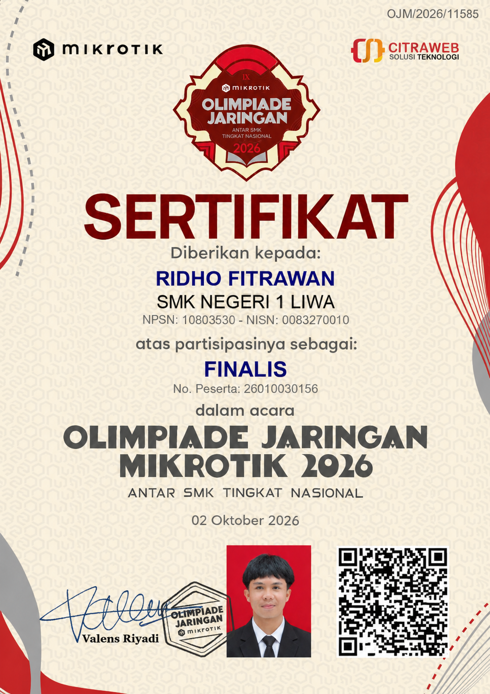

Trophy Room
Validation of hard work, technical mastery, and dedication to the craft of infrastructure engineering. These are the official documents of my journey.

LKS ITNSA 2025 - Provincial
Champion 1 (Juara I) - Provinsi Lampung 2025Held in Bandar Lampung on 2-3 July 2025. Competed against the best students in the province in the field of IT Network System Administration.
- Category: IT Network System Administration
- Issued by: Dinas Pendidikan dan Kebudayaan Provinsi Lampung
- Doc Number: 420/1744/V.01/DP.3/2025
- Signatory: Thomas Amirico, S.STP., M.H.

LKS ITNSA 2025 - National
Medallion for Excellence (MoE)National level competition held in Jakarta & West Java, 27 July - 1 August 2025. Achieved international standard competency.
- Category: IT Network System Administration
- Issued by: Pusat Prestasi Nasional, Kemendikdasmen
- Doc Number: 21238/PPN/DIKMEN/2025
- Signatory: Kepala Pusat Prestasi Nasional
OJM Mikrotik 2026 — Tahap 1
Top 5 — Wilayah SumateraQualification stage of Olimpiade Jaringan Mikrotik (OJM) 2026 for the Sumatera region. Competed against students from all across Sumatera and secured a place among the Top 5, qualifying for the national final round.
- Event: Olimpiade Jaringan Mikrotik 2026
- Stage: Tahap 1 — Regional Sumatera
- Result: Top 5 (Qualified for Final)
- Organizer: Citraweb Solusi Teknologi x Mikrotik

OJM 2026 — Finalis Nasional
Final Round — Yogyakarta, 02 Oktober 2026Final round of the Olimpiade Jaringan Mikrotik 2026 (Antar SMK Tingkat Nasional) held in Yogyakarta, organized by Citraweb Solusi Teknologi together with Mikrotik. Officially recognized as a NATIONAL FINALIST.
- Event: Olimpiade Jaringan Mikrotik 2026 — Antar SMK Tingkat Nasional
- Role: FINALIS — No. Peserta 26010030156
- Certificate No: OJM/2026/11585
- Issued by: Citraweb Solusi Teknologi x Mikrotik
- Date & Location: 02 Oktober 2026 — Yogyakarta
- Signatory: Valens Riyadi